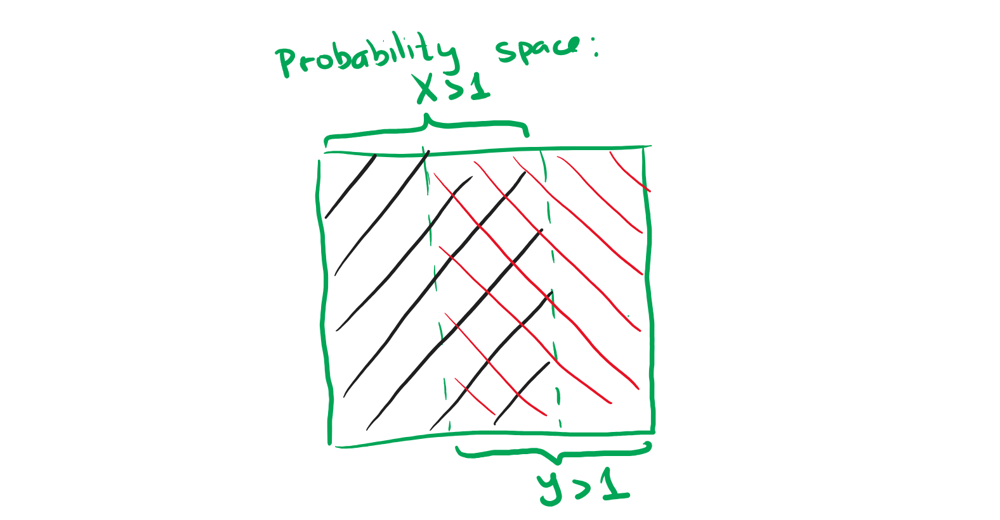

About non-negative random values X,Y it is known that P[X>1]≥32,P[Y>1]≥32.
Subproblem A
Prove that E[XY]≥31.

Fill in the probability space with event X>1. We occupy at max 32 of the space. Then, per Dirichet's principle (which we can use since we want to find the worst-case scenario), we first fill the part of the probability space that is unoccupied, now occupying the entire space (1) with some event, and then 31 of the space would be filled with both events in the worst-case scenario.
Since XY=X∧Y, then this portion (intersection) of the probability space that we will occupy regardless of how we define the values X,Y will precisely be P[XY>1]=31, which further holds because
X>1∧Y>1∧XY>1
Now use the Markov's inequality:
P[f≥α]≤αE[f]
P[XY≥1]≤1E[XY]
E[XY]≥31
q. e. d.
Subproblem B
Can random values X,Y be independent?
Yes, they can. Construct an example for this:
The probability space shall be single items from the following set {1,2,3}. The supply of items is limitless.
Both X,Y shall return fairly random value from this set, which means that it returns X>1 or Y>1 two thirds of the time, which matches the given conditions.
Both random values take values independently from each other.
We may check that the values are truly independent by simply first multiplying the chances independently and then multiplying the probabilities or calculating the values for all sequences at once. It would match the following identity
P[A∩B]=P[B]⋅P[A]
thus, the events are independent by definition.
Problem 2
The probability space is the set of binary words of length 42. All outcomes are equally probable. Random value L is equal to the number of ones in the first 28 elements of sequence, and random value R is equal to the number of ones in the last 14 elements of the sequence. Find E[LR].
We know that L and R are independent from each other. Thus, we may conclude that
E[LR]=E[L]×E[R]
A single element is represented by a metric of whether the element is a one or not. Thus, we may create a total of 42 such independent events.
The expected value of such each ξi is 21 since it can be a one or a zero with equal likelihood (21×1+21×0=21).
Then,
E[L]=E[ξ1]+E[ξ2]+⋯+E[ξ28]=228=14
E[R]=E[ξ29]+E[ξ30]+⋯+E[ξ42]=214=7
Therefore,
E[LR]=E[L]×E[R]=14×7=98
Problem 3
The probability space is all permutations of (x1,…,xn) elements from 1 to n. All outcomes are equally probable. Find the dispersion of the number of numbers that have not changed their position. Formally, the random value is the number of elements in set {i∣xi=i}.
From the last homework, we know that
E[∀i∣xi=i]=1
What remains is to calculate
D[F]=E[F2]−E[F]2
or more specifically we only need to find E[F2] since we already know the other value:
D[F]=E[F2]−1
Let's split the mathematical expectation per positions and assign ξi=1 if the position remained on place and ξi=0 if it didn't. Then,
whereas the chance that we get two elements on their own places is
n1n−11=n(n−1)1
Thus,
E[ξiξj]=1×n(n−1)1+0+0+⋯=n(n−1)1
Finally,
E[F2]=i=1∑nE[ξi2]+2i=1∑nj=i+1∑nE[ξiξj]
E[F2]=1+22n(n−1)n(n−1)1=1+1=2
Even more finally,
D[F]=E[F2]−E[F]2=2−12=1
Problem 4
The probability space consists of binary words of length n. All outcomes are equally probable. Prove that the chance of the event "the number of ones in the word differs from 2n by not more than 2n" does not exceed 10001.
Hoeffding's inequality states that
P[Xn−2n>εn]=P[ξn−21>ε]<2e−2ε2n
Let our random variable be Xn in the given probability space. We also need: